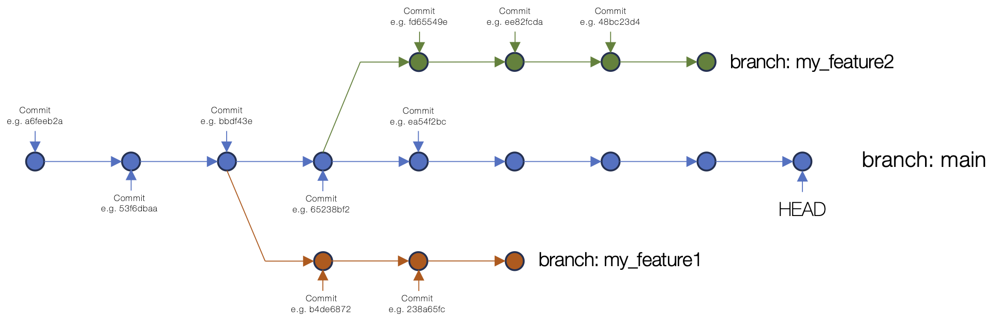

I can create a git repository and push it to GitHub, what next?
What other things can I do with GitHub.
Where can I get more help and information?
Objectives
Highlight some of the other features of git and GitHub.
Provide some pointers of where to look for further information.
Git and GitHub - where next?
Git and GitHub are very feature-rich tools and there’s far more to
learn than the very basic usage we’ve covered in this short session.
Indeed it’s possible to use these tools extensively in real-world
projects and still be learning new things regularly!
Branches: Branches provide a way to work on
changes to your repository content on a separate “track” to the main
repository content. Branching can be straightforward but it can also
lead you towards needing to understand a wide range of complexities in
git. Often these are best learnt through experience.

An example of branching in a Git repository
commit structure.
Merging: Consider a case where you’re working on
the content in your repository in a branch. You want to add some new
content to the repository and make changes to existing content and you’d
like a bit of time to work on these changes without affecting the main
content. Once you’ve completed your updates, you want to bring this
updated content onto the main branch of the repository. This is where
you’d undertake a merge.
An example of merging a branch into main in a
Git repository commit structure.
Conflicts: Git conflicts occur when you attempt
to push a change to a remote repository (i.e. pushing from your local
git repository to GitHub) and another change, that you don’t have
locally, has been made to the same piece of content on the remote
repository. For example, you change the temperature parameter in your 3D
printer configuration file, but your colleague has just changed it
themselves and pushed that change to the remote repository. When you
push to the remote repository, git detects that there’s a conflict.
There are a number of common workflows and approaches to avoiding and
resolving conflicts. Take a look at the Carpentries
git material on conflicts for a nice introductory overview.
Collaborative material development: Git was made
for supporting collaborative development. Indeed, it was developed to
support the development of the Linux kernel, a huge collaborative
community software development project! As with managing conflicts,
there are different workflows and best practices followed for using git
to manage working collaboratively on code or other text-based content.
There’s lots of material online about collaborative code or content
development with git.
GitHub:
GitHub adds a number of features on top of git that provide excellent
support for collaboration and working with teams (or with unknown
contributors) to support the creation and maintenance of code,
documentation or other materials. Some of these features are summarised
below. See the GitHub
documentation for more details. You can also find many tutorials or
videos online about how to make best use of these features.
Issues: Issues in GitHub provide a way to
highlight and discuss problems, enhancements or requirements as well as
supporting other repository content-related discussion. Issues are
specific to a given repository and are also often used for managing
development, opening issues for functionality to be added or updates
that need to be made.
Pull requests: Pull requests sit at the heart of
GitHub’s support for collaborative material development. When you create
a GitHub repository, even if it’s publicly visible, it will not allow
anyone other than you to commit to the repository. You can choose to add
collaborators to your repository and give them permission to commit.
However, in order to protect the main version of the content (generally
in the main branch), rules will often be in place to
prevent committing directly to the main branch. Instead, contributors
will be expected to make their contributions in a branch and then open a
request for their changes to be merged into the main branch.
They will open a pull request for this. In a collaborative project,
someone would then generally be expected to review the proposed
contibution(s) and potentially enter a discussion with the contributor
about any suggested/required modifications or changes to their
contribution, before ultimately accepting this into the main
content.
Forks: A fork is used in an extension of the
above scenario. If a repository on GitHub is public (or it’s private but
someone is given read-only access), and that individual wants to
contribute to the repository content, they can’t create a branch in the
main repository from which to open a pull request. Instead they create a
“fork” of the repository, a copy of the git repository within
GitHub, under their own user account, or an organisation that are part
of. They then have full read and write access to this fork of the
repository. They can make changes within their fork and then open a pull
request, as explained above, requesting to contribute content into the
main project repository. An owner/maintainer of that repository can then
choose to accept the conrtibution into the main repository once any
requested changes have been made.
GitHub actions: If you’re using GitHub for
developing software, GitHub Actions provides an advanced environment for
running a number of automated tasks on the code in your repository.
Actions is now very advanced and offers a huge range of capabilities,
including via third-party “actions”. Especially common uses of GitHub
Actions are for running automated tests on code and for packaging and
releasing code to package repositories. Actions can run processes on a
range of different operating systems and OS versions meaning that, for
example, a set of automated code tests can be run across a range of
different operating systems (e.g. Windows, Linux and macOS), each time
so specific trigger occurs. This trigger might be the pushing of new
content to a repository from a remote repository, or the creation of a
pull request or a release within GitHub. This can be used to ensure that
each time code is changed, it still functions as expected across a
number of different platforms.
Projects: GitHub now includes extensive
functionality for project management tasks via GitHub
Projects. A range of different views of project tasks can be
provided and these can be linked to repository issues to offer a direct
connection to discussion and code or other content added to a repository
to address specific task items.
Wiki: Repositories can have a wiki (if this
option is enabled) which provides a space for editable information pages
that sit alongside the repository. There are range of different use
cases for GitHub wikis. The inclusion of this functionality avoids
having to work with a separate external wiki platform if one is
required.
GitHub Pages: GitHub Pages provides free web
hosting for static web content developed within GitHub repositories. The
basic Pages infrastructure is based on the Jekyll static site generator which can
be used to support the display of Markdown-based content in a templated
stated web page environment. Pages also offers support for hosting
static web content generated through other means by using GitHub Actions
to build the pages and placing the generated content in repository
location (e.g. a separate branch) from where Pages hosts the
content.
Further training opportunities and resources
There are various resources available from documentation to training
courses (both taught and self-paced) that can help you to develop your
git and GitHub knowledge. Here are few options:
Online documentation, info and other materials:
Git introductory videos:
A great way to get a slightly different (and more detailed) perspective
on the background of git, what version control is and how it can help
you.
The git book (Pro
Git): Available online under a Creative Commons Attribution Non
Commercial Share Alike licence. A detailed reference to git from the
basics through to much more advanced topics, and some content on using
GitHub.
GitHub Blog: Regular articles
covering GitHub, platform features and related software development
topics.
Training courses:
Version
Control with Git course (Software Carpentry): This is The Carpentries introductory git
course covering the basics of Git and GitHub in 3+ hours of material.
This can be covered as a self-learning course or through attending a taught
Software Carpentry course which also includes an introduction to the
bash shell and a programming language (either Python or R).
CodeRefinery’s Collaborative
distributed version control course: This course adds another day of
more advanced material on top of the introductory course mentioned
above.
 An example of merging a branch into main in a Git repository commit structure.
An example of merging a branch into main in a Git repository commit structure.